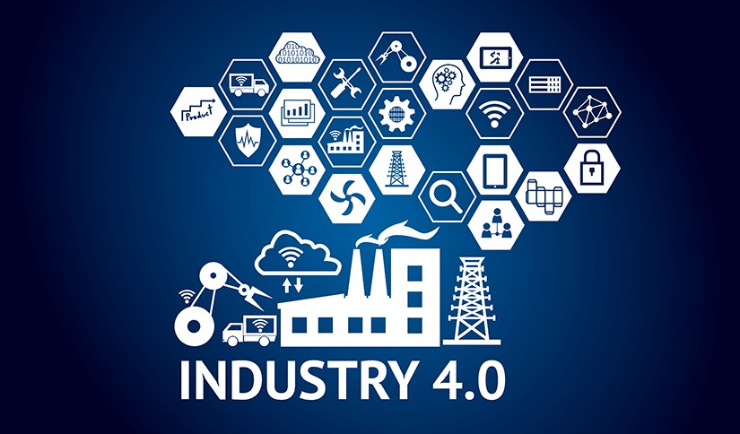

Revolusi Industri 4.0
Revolusi Industri 4.0 membawa transformasi besar dalam dunia industri dengan teknologi digital yang semakin canggih. Era ini ditandai dengan pemanfaatan internet, kecerdasan buatan (AI), big data, serta teknologi otomatisasi yang menghubungkan perangkat dan sistem secara lebih efisien.
Industri saat ini telah beralih dari sistem manual dan mesin konvensional ke penggunaan robot, IoT (Internet of Things), cloud computing, serta analisis data yang mendukung pengambilan keputusan lebih akurat dan cepat. Contoh nyata dalam kehidupan sehari-hari adalah layanan transportasi online, sistem pembayaran digital, dan otomatisasi di sektor manufaktur.
Kembali ke Halaman Utama